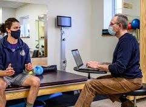

Goal 1 · 2 weeks
20° of wrist radial deviation
Get his radial deviation range of motion up to 20 degrees within two weeks.
Jackson's goals, how we track his progress, and what his therapy will look like over the next few months.
Jackson wants to get his forearm strength and range of motion back so he can play basketball again. We turned that into clear goals we can measure.
Get his radial deviation range of motion up to 20 degrees within two weeks.
Get his wrist flexion range of motion up to 60 degrees within four weeks.
Build back the strength and range of motion in his forearm that he lost from the fracture and the time in a cast.
Get back on the court and play basketball in the future without his arm holding him back.
We're monitoring two of the ROM measurements taken after his surgery. He shouldn't hit the goals right away. His numbers should go up little by little over the program.
His fracture was severe and had a lot of displacement, so there's a big loss of soft tissue near the fracture lines. Flexibility should come back a few weeks after starting PT, but strength will take longer, especially for basketball.


At your first visit we'll look over your X-rays with you, check how your bones, joints and muscles are healing, and make a plan around your needs and schedule. As you keep coming in, we'll talk about pain, swelling, and how well you can use your arm and hand for everyday things. As you get better, the exercises, reps and intensity go up safely.
Other people Jackson will work with during his recovery, and why they're part of his plan.
Monitors his surgical hardware and how the bones are healing.
Helps him rebuild fine motor skills for everyday things like writing and typing.
Later in his recovery, helps him condition safely so he can get back to basketball.
Exercise isn't the only part of recovery. These help protect his arm, his confidence and his healing.
A custom wrist orthotic and ergonomic devices protect his arm during daily things like typing and studying.
Mental resilience coaching helps him deal with the fear of getting hurt again when he goes back to things like dunking.
Contrast hydrotherapy and low-level laser therapy can speed up soft tissue healing and keep inflammation down.